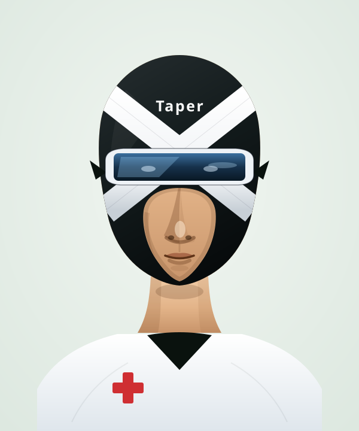

TaperX is the app for safely tapering off a prescription you no longer need — a taper plan built around you, trusted research at your fingertips, real answers from people who've done it, and a coach when you want one. Launching late 2026.
Takes 30 seconds. We'll ask a few quick questions to help shape the app. No spam — unsubscribe anytime.

Most prescriptions are far easier to start than to stop. TaperX is the app built to guide you off your medication — a personalized taper plan, evidence-based answers, the wisdom of people who've been there, and a coach when you need one.
Most long-term medications cause your body to adapt. Stopping suddenly is unsafe — sometimes dangerous. But a proper taper takes months of careful, personalized dose adjustments that a typical doctor's office isn't set up to manage.
So patients get told to "cut your pill in half," sent to rehab, or left to figure it out alone. We think there's a kinder, safer way.
No cold turkey. No piecing it together from scattered forum threads at 2am. TaperX brings the plan, the research, the community, and a real coach together — so you're never doing this alone.
Withdrawal can show up in more than 100 different symptoms, and they shift week to week. TaperX lets you log how you're feeling in seconds, see the patterns over time, and get evidence-based suggestions for easing the symptoms that hit hardest.
Whatever you're coming off, TaperX is built to support it — across the medication types where the need is most acute and the gap in support is widest.
Tapering can feel confusing and lonely, and the app is still on its way. So we've opened up one-on-one coaching you can book right now. In a private session, a TaperX coach will help you map a tapering plan grounded in the latest evidence, walk you through your options, keep an eye on how you're progressing, and help you make the case to your prescriber for the support you need.
Your starting point. A full hour to get to know your medication, your history, and your goals — and to build a personalised tapering plan designed around you.
Book a consultationFor anyone who already has a TaperX plan and has more than a quick question. We'll talk through your concerns and adjust your plan to match how you're doing. Also a good fit if you're tapering on a plan built outside TaperX and want personalised advice on it.
Book a long follow-upA quick check-in for a single question or a small adjustment once your plan is already underway.
Book a quick follow-upWhen our founder tried to come off Klonopin that he'd been prescribed for 10 years, no program existed. No protocol. No support. Just doctors who didn't know how to help and rehab centers built for the wrong problem.
TaperX is what he wished had existed — a program built by patients, for patients, backed by clinical evidence, guided by AI, and grounded in one simple belief: every prescription should have an off-ramp.
Shape the look and the personality of your TaperX AI Coach, so the support feels right for you. Want someone who listens gently — or someone who pushes? You decide.
Sign up for early access and a founding-member discount — then answer a few quick questions to help shape what TaperX becomes.
Thank you. We'll be in touch as soon as TaperX is available in your area — and you'll be among the first to know when we launch in late 2026.